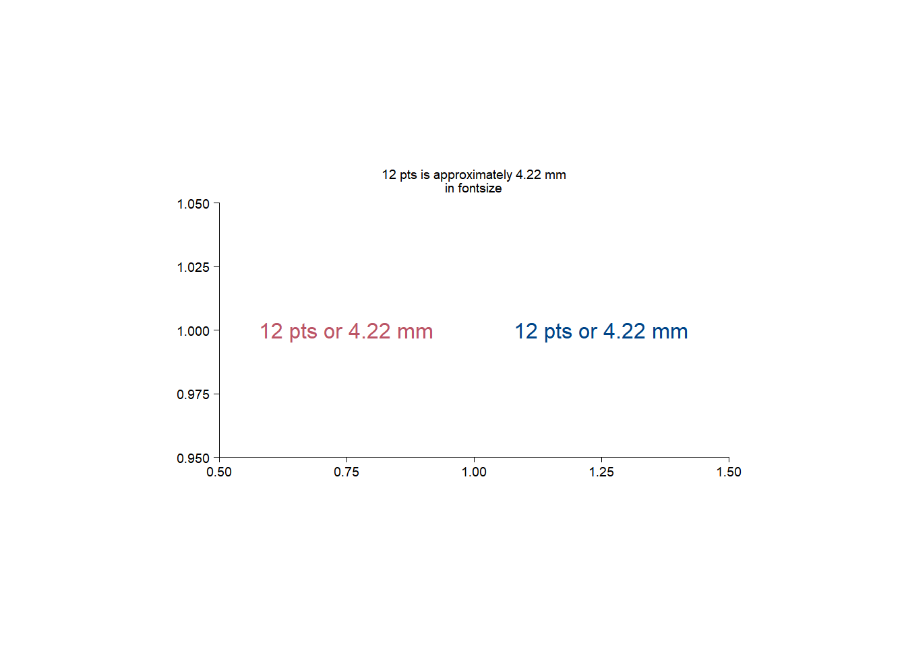
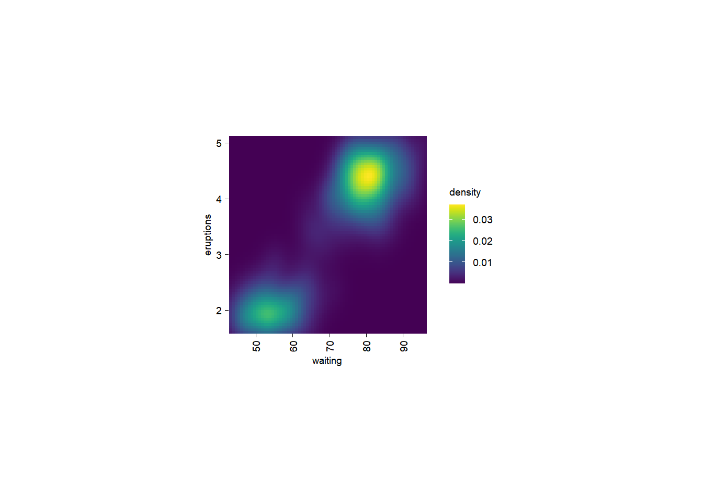
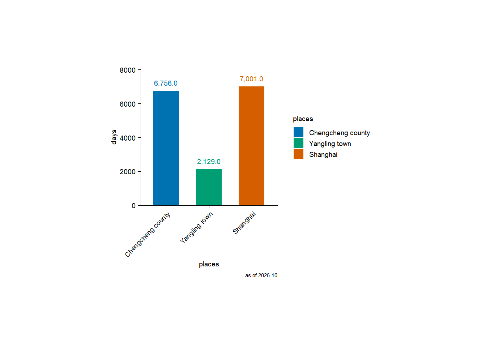
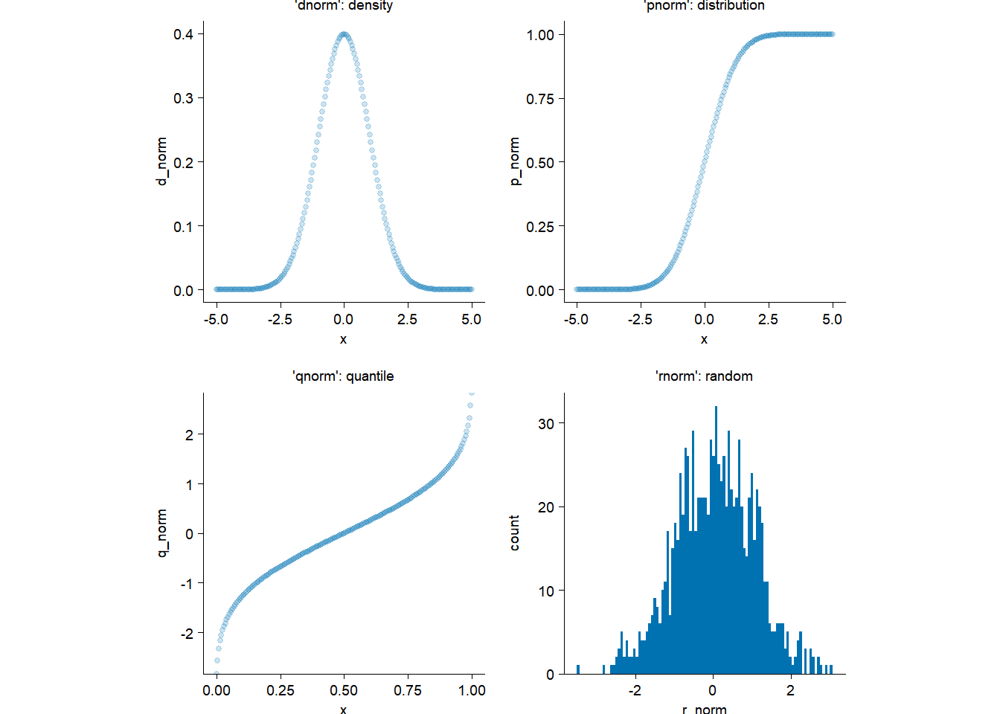
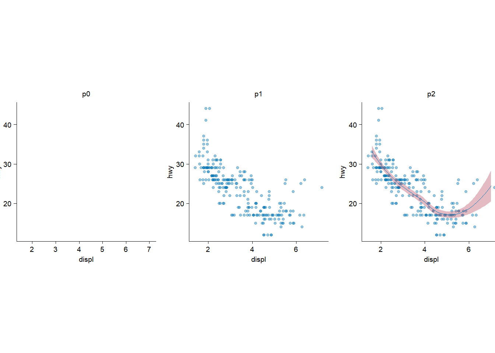

72.27 / 25.4[1] 2.845276… ggplot2 specifies the size in millimeters (mm), rather than the usual points (pts). The reason for this choice is that it makes it the units for font sizes consistent with how other sizes are specified in ggplots. (There are 72.27 pts in a inch, so to convert from pts to mm, just multiply by 25.4 / 72.27).
From ggplot2: Elegant Graphics for Data Analysis (3e)
Since 1 inch = 2.54 cm = 25.4 mm, and there are 72.27 pts in 25.4 mm,
so there are 2.845276 pts in a mm,
72.27 / 25.4[1] 2.845276or one pt equals to 0.3514598 mm.
25.4 / 72.27[1] 0.3514598If it is needed to convert from mm to pts, just: mm * (72.27 / 25.4); or from pts to mm, just: pts * (25.4 / 72.27).
There is a numeric (i.e. .pt) in ggplot2. The numeric is equal to 72.27 / 25.4.
mode(ggplot2::.pt)[1] "numeric"ggplot2::.pt == 72.27 / 25.4[1] TRUEround(1 / ggplot2::.pt, digits = 7) == round(25.4 / 72.27, digits = 7)[1] TRUE# For example
12 / ggplot2::.pt[1] 4.217518In other words, if it is needed to convert from mm to pts, just: mm * ggplot2::.pt; or from pts to mm, just: pts * (1 / ggplot2::.pt) or pts / ggplot2::.pt.
library(tidyplots)
df <- tibble::tibble(x = 1, y = 1)
df# A tibble: 1 × 2
x y
<dbl> <dbl>
1 1 1df |>
tidyplot(x = x, y = y) |>
add_annotation_text(
text = "12 pts or 4.22 mm",
x = 0.75,
y = 1,
color = "#bb5566",
fontsize = 12) |> # default in pt
add(ggplot2::annotate(
"text",
x = 1.25,
y = 1,
label = "12 pts or 4.22 mm",
color = "#004488",
size = 12 / ggplot2::.pt)) |> # convert 12 pts to the default mm (4.217518)
add_title(title = "12 pts is approximately 4.22 mm\nin fontsize") |>
adjust_x_axis(limits = c(0.5, 1.5)) |>
adjust_size(width = 100)
add_heatmap() add dendrogram for rows or columns?The answer is NO, since add_headmap() is a wrap of ggplot2::geom_raster.
library(tidyplots)
add_heatmapfunction (plot, scale = c("none", "row", "column"), rotate_labels = 90,
rasterize = FALSE, rasterize_dpi = 300, ...)
{
plot <- check_tidyplot(plot)
mapping <- NULL
scale <- match.arg(scale)
if (scale %in% c("row", "column")) {
color <- get_variable(plot, "colour")
x <- get_variable(plot, "x")
y <- get_variable(plot, "y")
out <- dplyr::mutate(dplyr::mutate(plot$data, row_zscore = (.data[[color]] -
mean(.data[[color]]))/sd(.data[[color]]), .by = tidyselect::all_of(y)),
col_zscore = (.data[[color]] - mean(.data[[color]]))/sd(.data[[color]]),
.by = tidyselect::all_of(x))
plot <- update_data(plot, out)
if (scale == "row") {
mapping <- ggplot2::aes(fill = row_zscore)
}
if (scale == "column") {
mapping <- ggplot2::aes(fill = col_zscore)
}
}
plot <- remove_y_axis_line(remove_x_axis_line(adjust_x_axis(plot,
rotate_labels = rotate_labels))) + ggplot2::coord_cartesian(expand = FALSE)
plot <- add_geom(plot, ggplot2::geom_raster(mapping = mapping,
...), rasterize = rasterize, rasterize_dpi = rasterize_dpi)
if (scale %in% c("row", "column")) {
plot <- adjust_legend_title(adjust_colors(plot, c("blue",
"white", "red")), color)
}
plot
}
<bytecode: 0x000002d12ba7e658>
<environment: namespace:tidyplots>ggplot2::faithfuld |>
dplyr::slice_head(n = 10)# A tibble: 10 × 3
eruptions waiting density
<dbl> <dbl> <dbl>
1 1.6 43 0.00322
2 1.65 43 0.00384
3 1.69 43 0.00444
4 1.74 43 0.00498
5 1.79 43 0.00542
6 1.84 43 0.00574
7 1.88 43 0.00592
8 1.93 43 0.00594
9 1.98 43 0.00581
10 2.03 43 0.00554ggplot2::faithfuld |>
tidyplot(x = waiting, y = eruptions, color = density) |>
add_heatmap()
So sometimes we need to pre-order the rows and/or columns before using add_headmap().
When I went for a walk with my wife this afternoon, our chat turned to the question: how long have I spent in different places?
So let me calculate it here.
library(tidyplots)
library(lubridate)
current_ym <- format(Sys.Date(), "%Y-%m")
df <- tibble::tibble(
places = factor(
x = c("Chengcheng county", "Yangling town", "Shanghai"),
levels = c("Chengcheng county", "Yangling town", "Shanghai"),
ordered = TRUE
),
days = as.numeric(c( # the time is not so precise (i.e. not to days)
ym("2001-08") - ym("1983-02"),
ym("2007-07") - ym("2001-09"),
ym(current_ym) - ym("2007-08")
))
)
df# A tibble: 3 × 2
places days
<ord> <dbl>
1 Chengcheng county 6756
2 Yangling town 2129
3 Shanghai 7001df |>
tidyplot(x = places, y = days, color = places) |>
add_sum_bar() |>
add_sum_value() |>
add_caption(caption = paste("as of", current_ym)) |>
adjust_x_axis(rotate_labels = TRUE)
I fist lived in Chengcheng county (Shaanxi, China), followed by Yangling town (Shaanxi, China). I am currently living in Shanghai.
So I have lived in Shanghai the longest.
downsample parameter of adjust_colors function?This is a source code snippet of tidyplots::adjust_colors:
if (n_ratio >= 1) { # n_ratio refers to n_provided/n_requested
if (n_ratio > 1) {
new_colors <- downsample_vector(new_colors, n_requested,
downsample = downsample)
}
suppressMessages(out <- out + ggplot2::scale_color_manual(values = new_colors,
drop = TRUE, labels = labels, ...))
suppressMessages(out <- out + ggplot2::scale_fill_manual(values = apply_saturation(new_colors,
saturation = effective_saturation), drop = TRUE,
labels = labels, ...))
}So we need to check the function of tidyplots:::downsample_vector:
downsample_vector <- function (x, n, downsample = c("evenly", "first", "last", "middle"))
{
if (length(x) <= n) {
return(x)
}
downsample <- match.arg(downsample)
if (downsample == "evenly") {
by <- (length(x)/(n - 1)) - (1/(n - 1))
i <- floor(cumsum(c(1, rep(by, n - 1))))
x[i]
}
else if (downsample == "first") {
x[1:n]
}
else if (downsample == "last") {
x[(length(x) - n + 1):length(x)]
}
else {
start_index <- ceiling((length(x) - n)/2) + 1
end_index <- start_index + n - 1
x[start_index:end_index]
}
}# New color scheme with length 3
new_colors <- c("red", "blue", "black")
new_colors[1] "red" "blue" "black"downsample_vector(new_colors, 1, downsample = "evenly")[1] "red"downsample_vector(new_colors, 1, downsample = "first")[1] "red"downsample_vector(new_colors, 1, downsample = "last")[1] "black"downsample_vector(new_colors, 1, downsample = "middle")[1] "blue"downsample_vector(new_colors, 2, downsample = "evenly")[1] "red" "black"downsample_vector(new_colors, 2, downsample = "first")[1] "red" "blue"downsample_vector(new_colors, 2, downsample = "last")[1] "blue" "black"downsample_vector(new_colors, 2, downsample = "middle")[1] "blue" "black"downsample_vector(new_colors, 3, downsample = "evenly")[1] "red" "blue" "black"downsample_vector(new_colors, 3, downsample = "first")[1] "red" "blue" "black"downsample_vector(new_colors, 3, downsample = "last")[1] "red" "blue" "black"downsample_vector(new_colors, 3, downsample = "middle")[1] "red" "blue" "black"downsample_vector(new_colors, 4, downsample = "evenly")[1] "red" "blue" "black"downsample_vector(new_colors, 4, downsample = "first")[1] "red" "blue" "black"downsample_vector(new_colors, 4, downsample = "last")[1] "red" "blue" "black"downsample_vector(new_colors, 4, downsample = "middle")[1] "red" "blue" "black"dnorm, pnorm, qnorm, and rnorm?My math and statistics are, to be honest, not good, and neither is my R. Here I want to understand the four functions outlined in the section title.
dnorm: density for the normal distribution; pnorm: distribution function for the normal distribution; qnorm: quantile function for the normal distribution; rnorm: random generation for the normal distribution.
library(tidyplots)
# dnorm
plot_dnorm <- tibble::tibble(
d_norm = dnorm(x = seq(-5, 5, by = 0.05)), # x: quantiles
x = seq(-5, 5, by = 0.05)
)
p1 <- plot_dnorm |>
tidyplot(x = x, y = d_norm) |>
add_data_points(alpha = 0.2) |>
add_title(title = "'dnorm': density")
# pnorm
plot_pnorm <- tibble::tibble(
p_norm = pnorm(q = seq(-5, 5, by = 0.05)), # q: quantiles
x = seq(-5, 5, by = 0.05)
)
p2 <- plot_pnorm |>
tidyplot(x = x, y = p_norm) |>
add_data_points(alpha = 0.2) |>
add_title(title = "'pnorm': distribution")
# qnorm
plot_qnorm <- tibble::tibble(
q_norm = qnorm(p = seq(0, 1, by = 0.005)), # p: probability
x = seq(0, 1, by = 0.005)
)
p3 <- plot_qnorm |>
tidyplot(x = x, y = q_norm) |>
add_data_points(alpha = 0.2) |>
add_title(title = "'qnorm': quantile")
# rnorm
plot_rnorm <- tibble::tibble(
r_norm = rnorm(n = 1000) # n: number of observations
)
p4 <- plot_rnorm |>
tidyplot(x = r_norm) |>
add_histogram(bins = 100) |>
add_title(title = "'rnorm': random")
patchwork::wrap_plots(p1, p2, p3, p4, ncol = 2)
Based on the plots, I (and might you) can now understand them intuitively.
Reduce for functional programmingThis is the parallel version but applying to tidyplots.
library(tidyplots)
add_points_curve <- function(x, y, ...) {
Reduce(
f = function(init_plot, next_component) {next_component(init_plot)},
x = list(...),
init = ggplot2::mpg |>
tidyplot(x = {{x}}, y = {{y}}) |>
add_title(title = "p0"),
accumulate = TRUE
)
}
add_points_curve(
x = displ,
y = hwy,
function(plot) {
add_data_points_beeswarm(plot, alpha = 0.4) |>
adjust_title(title = "p1")
},
function(plot) {
add_curve_fit(plot, fill = "#bb5566") |>
adjust_title(title = "p2")
}
) |>
patchwork::wrap_plots(ncol = 3)`geom_smooth()` using formula = 'y ~ x'